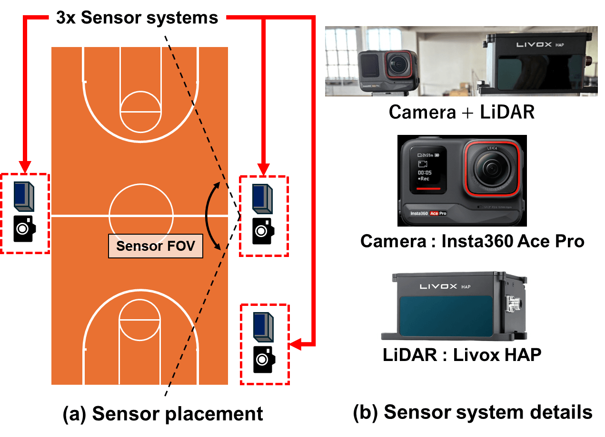
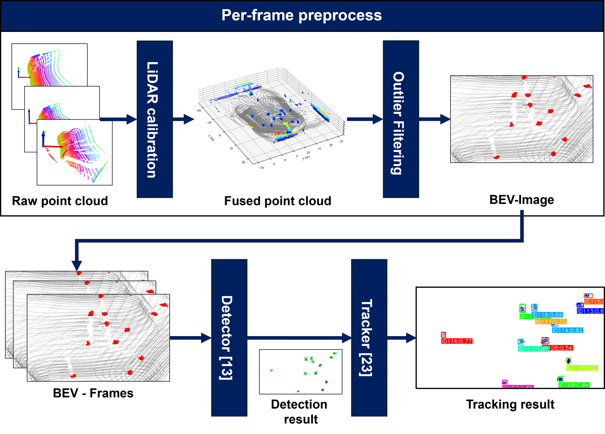
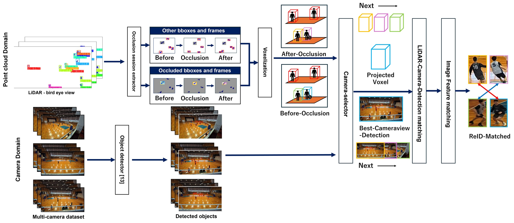
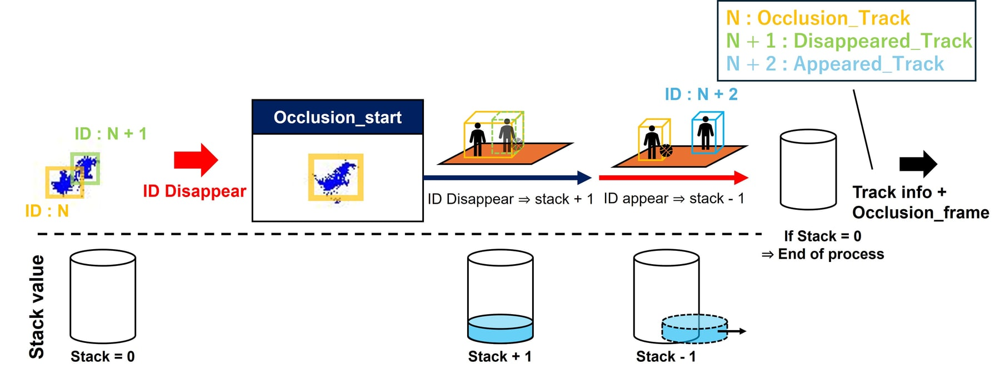

Abstract
Real-time 3D trajectory player tracking in sports plays a crucial role in tactical analysis, performance evaluation, and enhancing spectator experience. Traditional systems rely on multi-camera setups, but are constrained by the inherently two-dimensional nature of video data and the need for complex 3D reconstruction processing, making real-time analysis challenging. Basketball, in particular, represents one of the most difficult scenarios in the MOT field, as ten players move rapidly and complexly within a confined court space, with frequent occlusions caused by intense physical contact.
To address these challenges, this paper constructs BasketLiDAR, the first multimodal dataset in the sports MOT field that combines LiDAR point clouds with synchronized multi-view camera footage in a professional basketball environment, and proposes a novel MOT framework that simultaneously achieves improved tracking accuracy and reduced computational cost. The BasketLiDAR dataset contains a total of 4,445 frames and 3,105 player IDs, with fully synchronized IDs between three LiDAR sensors and three multi-view cameras. We recorded 5-on-5 and 3-on-3 game data from actual professional basketball players, providing complete 3D positional information and ID annotations for each player. Based on this dataset, we developed a novel MOT algorithm that leverages LiDAR's high-precision 3D spatial information. The proposed method consists of a real-time tracking pipeline using LiDAR alone and a multimodal tracking pipeline that fuses LiDAR and camera data. Experimental results demonstrate that our approach achieves real-time operation, which was difficult with conventional camera-only methods, while achieving superior tracking performance even under occlusion conditions.
Contributions
- LiDAR-camera multimodal sports MOT dataset. BasketLiDAR is the first synchronized MOT dataset combining LiDAR point clouds and multi-view camera footage of professional basketball players, with ID and 3D position annotations for all players.
- Fusion-based MOT framework. A multimodal MOT framework that integrates LiDAR-based tracking with ID re-identification from camera footage, achieving real-time and high-precision MOT.
- Research infrastructure for sports MOT. The dataset and the model implementation are shared to advance LiDAR-based sports analysis.
The BasketLiDAR Dataset
We recorded the practice sessions of SeaHorses Mikawa, a professional team in Japan's B.League B1, over two days. More than ten first-team players covering every position (PG, SG, SF, PF, C) took part, in 3-on-3 and 5-on-5 games and in repeated set plays in front of the goal: sessions with game-level intensity and frequent player occlusions. The recordings were then split into short clips averaging 13.1 seconds per play.
Sensor Setup
Three camera-LiDAR units overlook the court from different directions, so that the whole court is covered without blind spots and occlusions between players are kept to a minimum. Each unit pairs a camera (Insta360 Ace Pro) and a LiDAR (Livox HAP) side by side on a tripod.
- Frame rate: 10 FPS for both camera and LiDAR, hardware-synchronized
- Camera: 3840×2160 (4K), FOV 95° × 78°, aperture F2.6
- LiDAR: angular resolution 0.18° × 0.23°, 144 lines, 452,000 pts/s, FOV 125° × 25°, effective range 150 m
- Calibration: extrinsic parameters between the three units acquired in advance

Recording environment. (a) Three sensor systems combining camera and LiDAR are positioned at different locations within the court, giving comprehensive court coverage without blind spots under the FOV constraints. (b) In each sensor system, the camera (Insta360 Ace Pro) and LiDAR (Livox HAP) are positioned adjacently.
| Metric | Value |
|---|---|
| Total frames | 4,445 |
| Total bboxes | 397,757 |
| Total IDs | 3,105 |
| Sequences | 34 |
| Avg. sequence length | 13.1 s |
Annotation
- Camera footage: bounding boxes and IDs annotated separately for each of the three viewpoints.
- LiDAR point clouds: annotated once, after the point clouds from the three LiDARs are merged in a world coordinate system.
- Targets: players' limbs and entire torso; other objects such as the ball are excluded unless in contact with a player.
- Occlusion: a player's box is annotated even when occluded, as long as part of the body is visible.
- ID consistency: each player keeps a unique ID throughout a clip, consistent across annotators, with multiple rounds of quality checks and corrections.
LiDAR-Only MOT Pipeline
Camera-based sports 3D MOT has to detect players in every view, match them across cameras and triangulate their 3D positions; triangulation alone took 86% of the processing time in our camera-only implementation. LiDAR measures 3D directly, so our pipeline skips 3D reconstruction entirely and works on a bird's-eye view (BEV), staying compatible with existing tracking-by-detection 2D trackers.
- Multi-LiDAR integration: point clouds from the three LiDARs are merged into a world coordinate system using the pre-acquired extrinsics.
- Region filtering: floor and goalpost points are removed by height filtering, and points outside the court are cropped, leaving only the players.
- BEV projection: the filtered points are projected onto a BEV map, so that 2D detectors and trackers, which generalize well with limited data, can be used.
- Detection and tracking: YOLOv11, trained on BEV-projected player images from BasketLiDAR, detects players; ByteTrack associates IDs over time.

LiDAR-only MOT pipeline. Point clouds acquired from three LiDARs are integrated in a world coordinate system using calibration parameters, and only player regions are extracted through court region cropping and height filtering. BEV projection then enables player detection using 2D detectors and ID association by trackers.
LiDAR-only tracking on a BasketLiDAR clip.
LiDAR-Camera Fusion
LiDAR captures the 3D geometry of the court cheaply but carries no appearance cues, so LiDAR-only tracking can switch, lose or update IDs whenever players occlude each other. The fusion framework runs the fast LiDAR-only pipeline first, then applies camera-based re-identification only to the occlusion sessions, keeping both high speed and high ID consistency.
- Occlusion-Session-Extractor: monitors the number of active track IDs frame by frame. A session opens when the count drops and closes when it returns, giving the time span and the IDs involved.
- LiDAR-camera detection matching: each player's BEV box is lifted to a 3D voxel and projected into every camera. The camera where the player is least overlapped by others is chosen, and frames are scanned backward and forward from the occlusion until YOLOv11 finds exactly one detection overlapping the projected box: a clean view of the player.
- Re-identification: features of the clean patches before and after the occlusion are extracted with a ResNet-50 trained on Market1501, and the pair with the highest cosine similarity is treated as the same player, restoring the pre-occlusion ID.

LiDAR-camera-fusion pipeline. Real-time tracking using LiDAR point clouds is adaptively integrated with camera-based Re-ID for occlusion recovery. The Occlusion Session Extractor triggers appearance feature matching to restore correct ID associations when player occlusions occur.

Occlusion-Session-Extractor. The module opens an occlusion session whenever the number of active track IDs drops below its previous level and closes it once the count returns. For each session, it outputs the time span and the IDs involved, together with their trajectories.
Results
The 34 clips are split into 24 for training and 10 for testing, balanced by the number of players and the frequency of occlusions. All methods share YOLOv11 as the detector, retrained on each method's training split. The LiDAR pipelines track with ByteTrack, and the camera-only baseline, which reconstructs 3D by triangulation across views, tracks with OC-SORT. Speed is measured on an AWS EC2 g4dn.xlarge instance.
Accuracy and Speed
LiDAR-camera fusion improves on the camera-only approach across all metrics, by 11.5% in MOTA and 10.2% in DetA, which we attribute to the explicit 3D information LiDAR provides. LiDAR-only tracking runs about 130× faster (0.22 → 28.4 FPS) and the fusion about 30× faster (0.22 → 6.34 FPS), because triangulation, 86% of the camera-only processing time, is no longer needed.
| Method | HOTA ↑ | IDF1 ↑ | AssA ↑ | MOTA ↑ | DetA ↑ | FPS ↑ |
|---|---|---|---|---|---|---|
| LiDAR-camera-fusion | 0.917 | 0.930 | 0.881 | 0.957 | 0.955 | 6.34 |
| LiDAR-only | 0.917 | 0.918 | 0.877 | 0.957 | 0.955 | 28.4 |
| Camera-only | 0.831 | 0.868 | 0.810 | 0.842 | 0.853 | 0.218 |
| Camera-only | LiDAR-only | LiDAR-camera-fusion | |
|---|---|---|---|
| Detection & Tracking | 628.0 | 35.2 | 35.2 |
| Triangulation | 3954.5 | – | – |
| LiDAR-camera-fusion ReID | – | – | 122.6 |
| Total | 4582.5 | 35.2 | 157.8 |
Recovering IDs after Occlusion
We measure the ID recovery rate RID: how often a ground-truth ID and tracker ID pair that was once lost is later tracked as the same pair again. Camera fusion raises it from 0.16 to 0.24, as LiDAR positions combined with camera appearance allow accurate re-identification after occlusions. The fusion is slower than LiDAR-only (28.4 → 6.3 FPS) but still fast enough for real-time processing.
| Method | Occlusion Recovery Rate ↑ |
|---|---|
| LiDAR-camera-fusion | 0.241 |
| LiDAR-only | 0.158 |
Dataset Access
The BasketLiDAR dataset (LiDAR point clouds, camera images and annotations) is available upon request for research purposes. Please fill in the dataset request form. Once approved, we will share a download link.
- The dataset may be used for non-commercial research and academic publications. Redistribution, rehosting or public sharing, in whole or in part, is not allowed without permission from the authors.
- The code in the GitHub repository (point cloud to BEV detection, BEV detection to tracks, and camera-fusion post-processing notebooks) is released under the MIT License.
Acknowledgements
This research was supported in part by the JST CREST JPMJCR23M4, JST PRESTO JPMJPR22PA, and JSPS KAKENHI 24K02940.
BibTeX
@inproceedings{hayashi2025basketlidar,
author = {Hayashi, Ryunosuke and Torimi, Kohei and Nagata, Rokuto and Ikeda, Kazuma and Sako, Ozora and Nakamura, Taichi and Tani, Masaki and Aoki, Yoshimitsu and Yoshioka, Kentaro},
title = {BasketLiDAR: The First LiDAR-Camera Multimodal Dataset for Professional Basketball MOT},
booktitle = {Proceedings of the 8th International ACM Workshop on Multimedia Content Analysis in Sports (MMSports '25)},
year = {2025},
pages = {78--86},
doi = {10.1145/3728423.3759401}
}